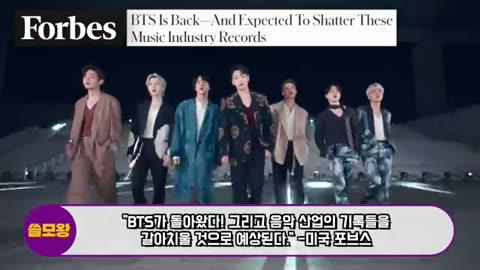
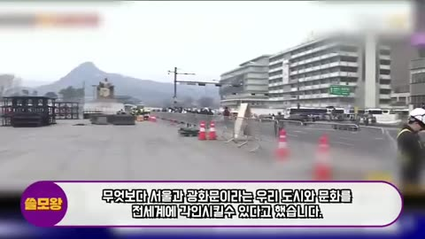
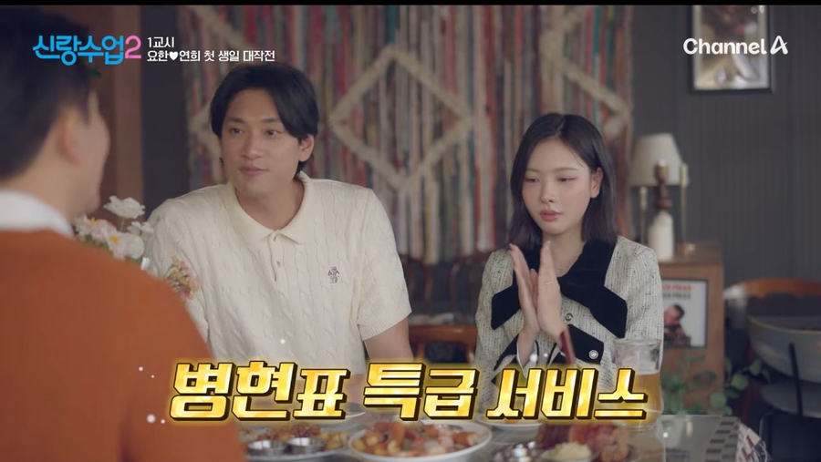

① 제작 흐름은 두 가지로 분리
편집 흔적이 있다고 수익화가 보장되는 것은 아닙니다. 고유한 관점·해설·자료 재구성과 권리 확인이 중요하며, 단순 줌·반전·배속·색보정으로 독창성을 증명했다고 기록하지 않습니다.
② 실제 편집 분석 캡처와 구현 시안
왼쪽은 기존 저장소에 이미 공개된 편집 분석 캡처, 아래는 이 페이지에서 만든 디자인 적용 시안입니다. 캡처를 새로 생성한 AI 영상 결과로 표시하지 않습니다.




🌸 제작 적용 시안 4종 · 실제 영상 렌더가 아닌 HTML 미리보기
결과가 달랐을까?질문으로 시작 · 실제 자료로 답변
화면에서 함께 확인기사·댓글 인용은 출처 검증 후 표시
무엇이 달랐는가크리에이터의 분석·반론·결론
HEX는 이 시안의 제안값입니다. 기존 방송 이미지에서 실제로 추출한 색이라고 주장하지 않습니다. 최종 글꼴·색상은 마스터 계획의 디자인 규칙과 실제 렌더로 확인합니다.
③ 가장 중요한 출력 계약: 자막을 처음부터 분리
| 파일 | 역할 | 금지·확인 사항 |
|---|---|---|
| clean_master.mp4 | 제작한 영상의 텍스트 오버레이 없는 베이스 | 새 자막·타이틀·댓글 카드·로고를 영상에 미리 구워 넣지 않음. 원래 촬영된 간판·화면 글씨는 별도 취급 |
| captions.srt | 일반 자막 문구·타임코드 | 정확한 영상 시간 기준; 기존 자막과 중복 확인 |
| style.json / titles.json | 폰트·HEX·그림자·위치·타이틀 효과 | SRT에 모든 스타일이 저장된 것으로 오인 금지 |
| voice_ai.wav / voice_human/ | AI 내레이션과 사람 육성 슬롯 분리 | 핵심 문장 변경 후 음성이 오래된 상태로 남지 않게 확인 |
| bgm.wav / sfx/ | 음악과 효과음 독립 | 영상 소리와 합쳐진 단일 트랙만 남기지 않음 |
| timeline.json / project.kdenlive | 편집 가능한 컷·레이어·시간표 | Kdenlive 미설치일 땐 호환 PASS라고 표시 금지 |
| preview_captioned.mp4 | 임시 자막 포함 미리보기 | 최종 클린본과 혼동 금지, 프리뷰만 있는 상태로 완료 처리 금지 |
| sources.json / qc_report.json | 출처·허가·검증·AI 고지·수정 기록 | 미확인 자료를 허가됨·검증됨으로 표시 금지 |
💡 장면마다 3~4초 자동 자르기, 108~115% 줌·반전 등의 의미 없는 일괄 변경은 기본 OFF입니다. 문장 전환·자료 증거·시청 흐름을 기준으로 필요한 곳에만 사용합니다.
④ 🌸 딱 한 번 복사 · 현재 편의 제작 지시문
문서는 현재 선택한 번호의 공식 원문 링크를 참조합니다. 외부 AI가 해당 페이지에 접근할 수 없는 경우 원문 텍스트를 전달하도록 지시합니다. 저장 경로는 기존 실제 프로젝트 폴더를 확인한 뒤 설정하게 했습니다.
⑤ 실제 완성 조건 · HumanTouch가 미완성이면?
- 영상과 자막이 별도 파일로 남고, 수정할 수 있는 타임라인이 있다.
- 처음 30초를 실제 MP4로 출력하고, 자막 중복·검은 띠·글자 밀림을 확인했다.
- 선택한 컷·해설·자막이 최종 영상에 반영됐다. JSON만 저장한 것은 편집 완료가 아니다.
- 서로 다른 영상 51~100의 해설·근거·구성이 달라 반복 템플릿 생산처럼 보이지 않는다.
- 자료 출처·사용 조건·가공 여부·AI 고지 필요성을 기록한다.
- HumanTouch에서 실제 저장·렌더가 불가능하면 미완료로 표시하고, 완성된 대본·소스를 보존해 다른 검증된 NLE로 이어간다.
📂 저장 위치는 왜 바꾸지 않나요?
기존 결과물·수집 자료·디자인 경로를 그대로 사용합니다. 새 상위 폴더로 옮기면 내용 해시 자체가 같더라도 자동화나 Kdenlive의 절대경로 참조가 끊길 수 있습니다. 실행 에이전트가 해당 프로젝트의 실제 저장소·마운트·기존 메타데이터를 확인하고 새 버전만 저장하도록 합니다.
📌 수익화·저작권을 위해 무엇을 남겨야 하나요?
원문 자료와 허가 근거, 독자적 해설·반론·통계 검증, 소스 이용 범위, TTS·음악 라이선스, 실제 수정 전후, AI 생성/변형 고지 판단을 기록합니다. 특정 크롭 비율이나 컷 수가 수익화 통과를 보장하지 않습니다.